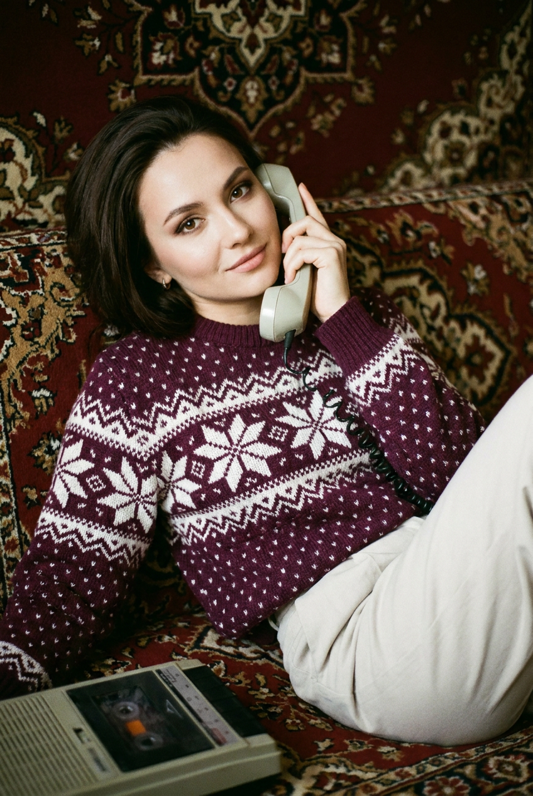
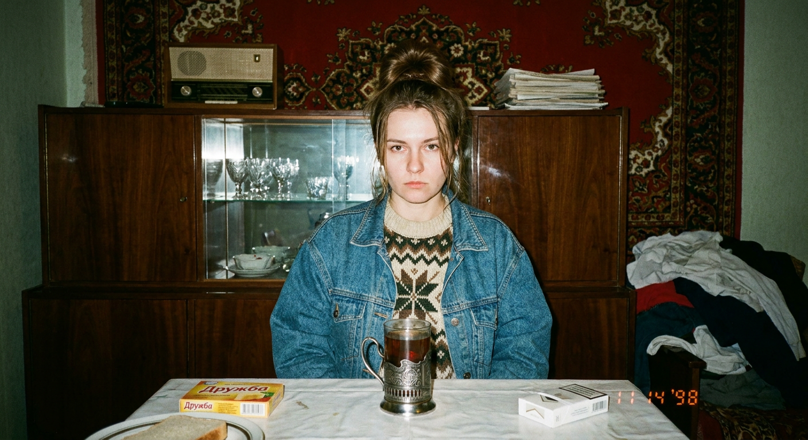
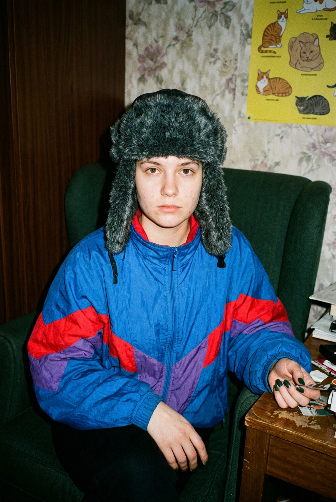
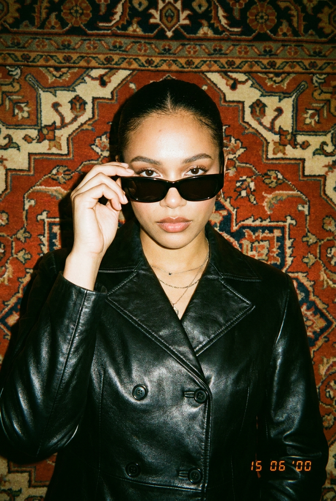
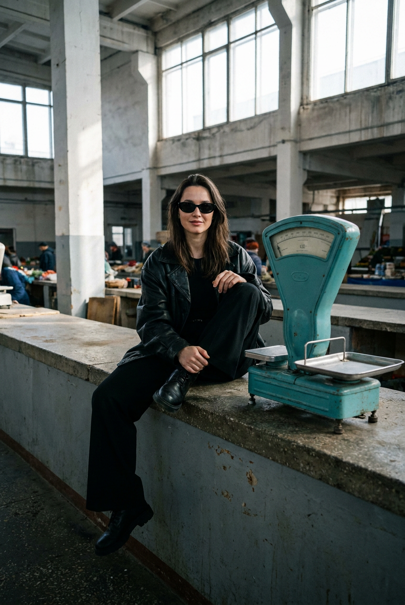
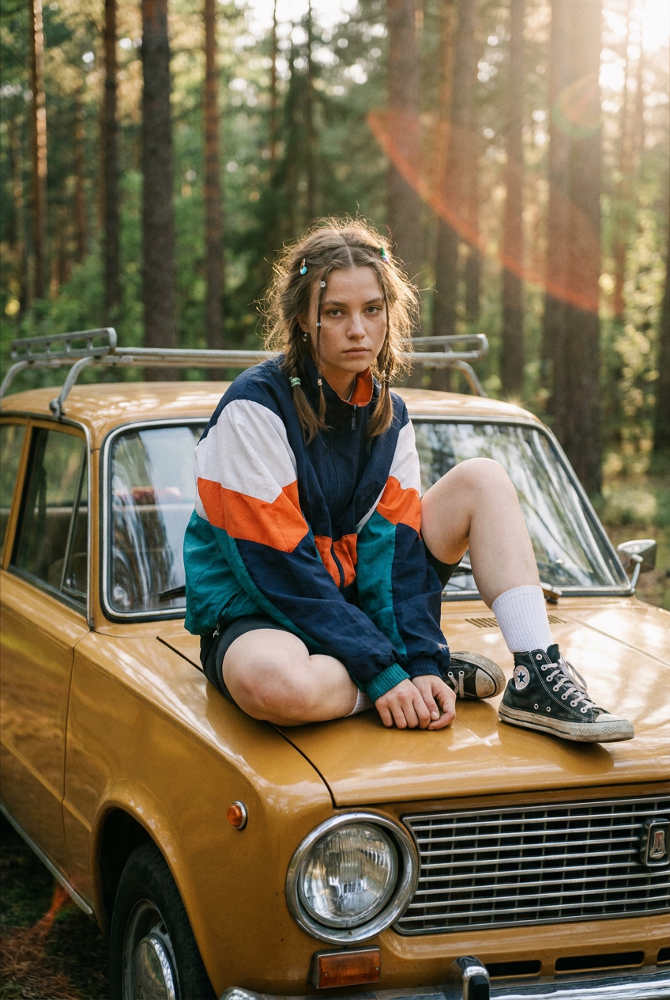
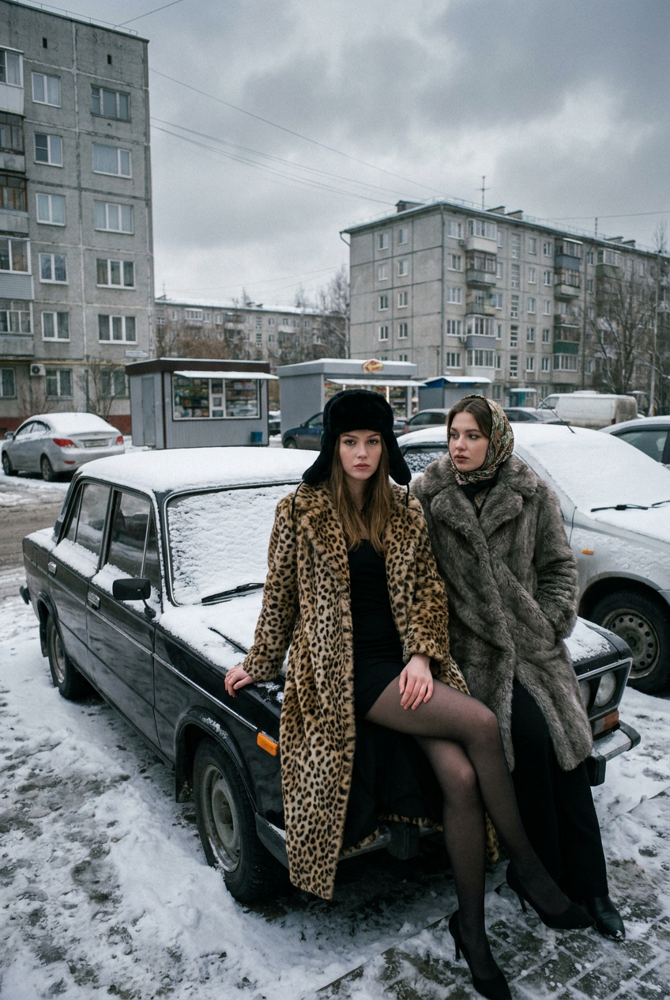
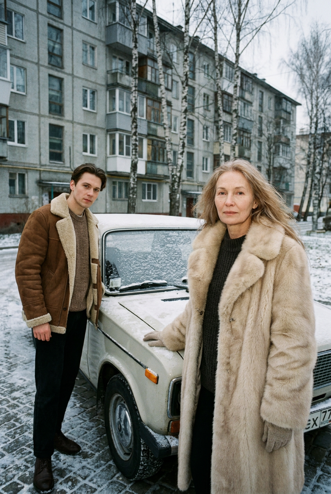
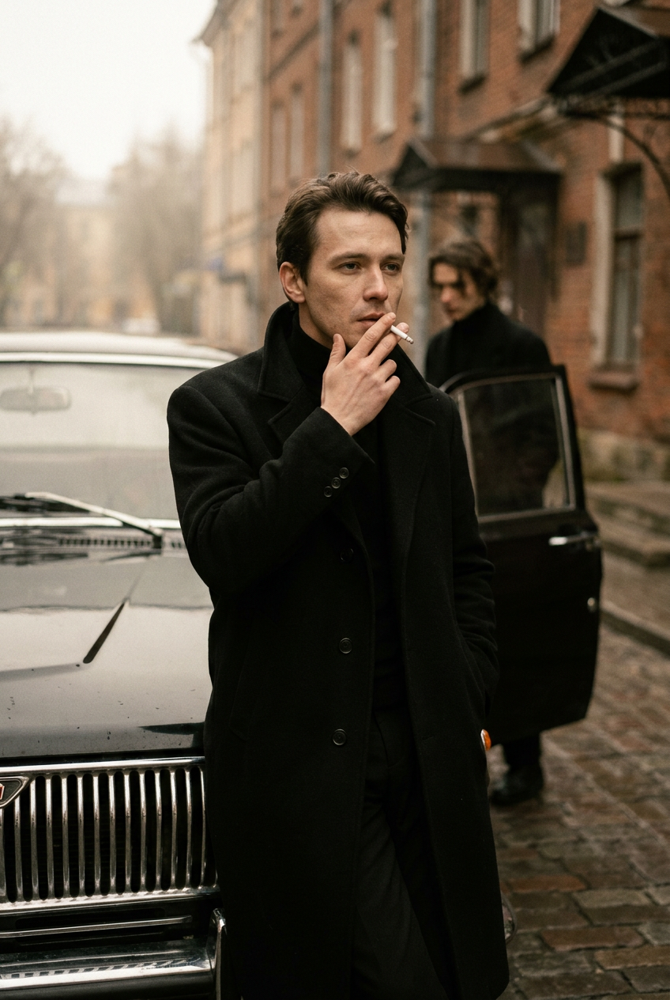
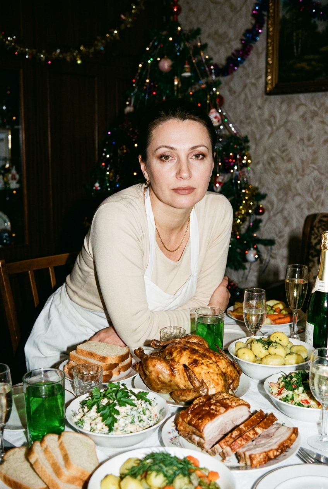

ИИ-фото в стиле 90-х: 10 промптов для нейросети

Снимок в духе 90-х сложно собрать из одного фильтра: цифровая картинка часто выглядит слишком чистой, одежда теряет эпоху, а лицо становится непохожим на оригинал. Генерация по референсу решает эту проблему и помогает получить кадр с узнаваемой внешностью, нужной позой и правдоподобной плёночной фактурой.
В подборке — 10 сценариев для разных настроений: домашний телефонный разговор, семейная кухня, вечеринка, рынок, поездка в лес и зимняя съёмка у старой машины. Промпты можно копировать целиком или использовать как основу для своей сцены.
Как сгенерировать такое фото: пошагово
Нужен снимок анфас при ровном свете, лицо в кадре целиком, без тёмных очков и головных уборов. Разрешение от 1000 пикселей по короткой стороне. Чем чётче исходник, тем точнее модель повторит черты.
Выберите сценарий ниже и нажмите «Копировать» — текст уйдёт в буфер целиком, вместе с командой сохранения внешности. Эта команда стоит первой строкой и отвечает за то, чтобы на выходе было ваше лицо, а не случайное.
Кнопка «Сгенерировать» рядом с каждым промптом открывает модель в новой вкладке. Nano Banana Pro работает с референсом лица — в отличие от моделей, которые генерируют портрет с нуля и узнаваемость теряют.
Промпт — в поле ввода, портрет — через загрузку референса. Порядок значения не имеет, но без референса команда сохранения внешности работать не будет: модели нечего сохранять.
Для сторис и ленты берите 9:16, для превью и обложек — 4:3. Первый результат редко идеален: если поза или свет ушли не туда, поправьте соответствующую часть промпта и запустите заново. Обычно хватает двух-трёх итераций.
10 промптов для генерации
1. Домашний звонок на диване
Строго сохранить внешность по загруженному референсу: черты лица, пропорции, мимику и текстуру кожи без изменений. Вертикальная гиперреалистичная фотография, похожая на домашний снимок 90-х, сделанный простой плёночной мыльницей. Я лежу или полусижу на диване либо тахте, корпус развёрнут примерно на пол-оборота вправо. Одна рука поднята к лицу и держит трубку стационарного ретро-телефона. Лицо резкое, взгляд спокойный — прямо в объектив или немного в сторону, будто я продолжаю разговор; выражение мягкое и уверенное. Сохрани мою идентичность по загруженному фото: овал лица, глаза, нос, губы, брови, тон кожи и естественную мимику без деформаций. Макияж в духе 90-х: выделенные глаза, матовый тон, естественные сатиновые или матовые губы. На мне свободный тёплый свитер бордово-фиолетового оттенка с бело-кремовым геометрическим или снежным орнаментом, видны вязка, края и резинка манжет. Внизу — светлые молочные брюки с мягкими складками. Натуральная плёночная текстура, бытовой свет, без глянцевой ретуши.
2. Семейный снимок на кухне

Строго сохранить внешность по загруженному референсу: черты лица, пропорции, мимику и текстуру кожи без изменений. Сделай правдоподобную фотографию из семейного альбома середины или конца 90-х, снятую в обычной квартире постсоветского пространства. Вертикальная композиция: я сижу прямо напротив камеры за небольшим кухонным столом, голова строго по центру, руки скрыты под столом или спокойно лежат на коленях. Взгляд направлен в объектив, выражение нейтральное и чуть серьёзное, без улыбки. Используй загруженное фото для точного сходства: не меняй форму лица, пропорции, глаза, нос, губы, брови, тон кожи и естественные особенности. На мне объёмная голубая джинсовая куртка oversize, под ней — тёплый вязаный свитер с крупным норвежским жаккардом кремового, коричневого и тёмно-зелёного цветов. Интерьер должен выглядеть настоящим: небольшая кухня, простой стол, домашний вечер, мягкий комнатный свет, слегка выцветшие цвета, зерно и характер старой плёнки. Никакой современной стилизации, идеального интерьера или beauty-ретуши.
3. Кресло и предметы на столе

Строго сохранить внешность по загруженному референсу: черты лица, пропорции, мимику и текстуру кожи без изменений. Вертикальный кадр 2:3 в эстетике домашних фото конца 90-х — начала 2000-х, будто снято дешёвой плёночной мыльницей со встроенной фронтальной вспышкой. Я сижу или полусижу в тёмно-зелёном кресле либо стуле; в кадре видны голова, плечи и руки. Лицо почти фронтально обращено к объективу, взгляд прямой, выражение спокойное, немного серьёзное. Правая рука опирается на край стола или подлокотник и приближает к камере предметы, лежащие на столе; ногти тёмно-зелёные, изумрудные, естественной формы. Левая рука расслабленно лежит рядом. Проверь анатомию кистей и пальцев. Сохрани по референсу моё лицо, цвет кожи, глаза, нос, губы, брови, мимику и естественный оттенок волос. Макияж минимальный, кожа реалистичная. Добавь прямой свет вспышки, жёсткие небольшие тени, лёгкий красноватый сдвиг, плёночное зерно и бытовую атмосферу без глянца.
4. Очки перед объективом

Строго сохранить внешность по загруженному референсу: черты лица, пропорции, мимику и текстуру кожи без изменений. Создай крупный вертикальный портрет 2:3 в стилистике конца 90-х или начала 2000-х, снятый на недорогую плёночную мыльницу со встроенной вспышкой. Голова и плечи занимают большую часть кадра, фигура расположена строго по центру. Я держу правой рукой чёрные солнцезащитные очки и приподнимаю их к верхней части лица так, чтобы глаза были видны сквозь линзы или частично перекрывались; палец касается оправы. Голова слегка повернута, но поза остаётся почти фронтальной, взгляд уверенно направлен в камеру. Рука и пальцы анатомически правдоподобны. Используй загруженный портрет для сохранения моей внешности: форма лица, разрез глаз, нос, губы, брови, тон кожи и мимика должны остаться узнаваемыми. Макияж глаз — выразительный тёмно-сине-серый ретро-акцент, брови аккуратные, губы матовые тёпло-красные или терракотовые. Добавь настоящую текстуру кожи, мягкое плёночное зерно и вспышечный свет без пластиковой ретуши.
5. Прилавок старого рынка

Строго сохранить внешность по загруженному референсу: черты лица, пропорции, мимику и текстуру кожи без изменений. Фотореалистичный вертикальный кадр 2:3 в духе модной ретро-съёмки 90-х и начала 2000-х. Локация — большой крытый городской рынок: старый гастроном, продуктовый или вещевой рынок в постсоветском стиле, с металлическими конструкциями, потёртой торговой стойкой, прилавками и холодным дневным светом. Я сижу на краю старого прилавка, поза расслабленная, но собранная, настроение fashion-editorial. Сохрани мою узнаваемость по загруженному фото: овал лица, глаза, нос, губы, брови, пропорции, тон кожи и индивидуальные черты; лицо не должно становиться кукольным или чрезмерно идеальным. Одежду, волосы и позу стилизуй под городскую моду 90-х: лаконичные силуэты, плотные ткани, заметные детали эпохи. Картинка должна напоминать настоящую плёнку, а не цифровый фильтр: холодная цветовая температура, лёгкое выцветание, умеренное зерно, реалистичная кожа и естественные отражения. Без современных вывесок, логотипов и стерильного интерьера.
6. Жёлтая машина в лесу

Строго сохранить внешность по загруженному референсу: черты лица, пропорции, мимику и текстуру кожи без изменений. Сгенерируй атмосферную вертикальную фотографию 2:3 в эстетике 90-х: инди-гранж, ностальгический road trip и мягкая плёночная цветокоррекция. Я сижу на капоте старой жёлтой или горчично-оранжевой советской машины среди соснового леса. Автомобиль напоминает ВАЗ или Ладу 70–80-х годов: круглая фара, хромированная решётка радиатора, старый бампер, багажник на крыше, слегка потёртая краска и правдоподобные следы эксплуатации. Поза непринуждённая, кадр выглядит как случайный снимок из поездки, дневной свет мягкий, вокруг сосны и спокойная загородная атмосфера. Используй загруженное фото как референс лица и сохрани мою идентичность: форму лица, глаза, нос, губы, брови, овал, пропорции, тон кожи и индивидуальные особенности. Менять можно одежду, причёску, позу и фон, но не лицо. Добавь натуральную кожу, плёночное зерно, лёгкую выцветшую цветопередачу и отсутствие цифровой глянцевости.
7. Зимний гламур у ВАЗ-2106

Строго сохранить внешность по загруженному референсу: черты лица, пропорции, мимику и текстуру кожи без изменений. Фотореалистичный вертикальный снимок в эстетике post-soviet winter glamour и fashion-editorial 90-х. Две стильные девушки сидят на капоте чёрной винтажной ВАЗ-2106 на зимней городской улице. Я нахожусь на переднем плане: на мне длинная леопардовая шуба, чёрная меховая шапка, чёрное мини-платье, чёрные колготки и туфли на каблуке. Рядом сидит подруга в объёмной серо-коричневой меховой шубе и винтажном платке. На фоне — старые многоэтажки, магазины, припаркованные автомобили, снег и мокрый асфальт. День пасмурный, воздух холодный, лица в резком фокусе. Используй загруженное фото для точного сходства главной героини: не меняй её глаза, нос, губы, брови, форму лица, тон кожи и возраст. Сохрани реалистичную текстуру кожи, приглушённые цвета, мягкое зерно 35-мм плёнки и немного выцветший контраст. Машина должна иметь узнаваемый старый кузов и реальные отражения, без современных деталей.
8. Зимняя съёмка у машины

Строго сохранить внешность по загруженному референсу: черты лица, пропорции, мимику и текстуру кожи без изменений. Создай вертикальную фотографию 2:3 как дорогую зимнюю fashion-съёмку 90-х с холодной улицей, старым автомобилем и мягким дневным светом. Сцена происходит в заснеженном городском дворе или на улице: на заднем плане серое многоэтажное здание советской или постсоветской архитектуры, берёзы с белыми стволами, снег и прозрачный морозный воздух. Перед камерой стоят или слегка наклоняются к машине два стильных человека, позируя рядом со старым автомобилем. Главная девушка должна выглядеть узнаваемо по загруженному фото: сохрани форму лица, глаза, нос, губы, брови, возраст, пропорции, тон кожи и все индивидуальные особенности, не используй пластиковую ретушь. Одежда — дорогая ретро-мода 90-х, с выразительными зимними фактурами, объёмными силуэтами и аккуратными аксессуарами. Добавь приглушённую плёночную палитру, холодные серо-синие оттенки, мягкое зерно, реалистичные лица и спокойное редакционное настроение. Автомобиль старый, без новых логотипов и деталей.
9. Мрачный кадр у седана

Строго сохранить внешность по загруженному референсу: черты лица, пропорции, мимику и текстуру кожи без изменений. Фотореалистичный вертикальный кадр 2:3 в мрачной fashion-эстетике 90-х и начала 2000-х. Я стою рядом со старой тёмной советской машиной или европейским седаном 70–80-х годов. Автомобиль массивный, немного потёртый, с хромированной решёткой радиатора, круглыми фарами, тяжёлым кузовом и реалистичными отражениями на металле. Локация — приглушённый городской фон без современных вывесок, настроение кинематографичное и немного меланхоличное. Поза уверенная, естественная, одежда и причёска выдержаны в мрачном городском стиле той эпохи: плотные ткани, тёмная палитра, лаконичные аксессуары. Сохрани моё лицо по загруженному референсу: овал, глаза, нос, губы, брови, пропорции, тон кожи и индивидуальные черты должны остаться прежними. Разрешается менять только стилизацию, одежду, волосы, свет и окружение. Используй мягкий естественный свет, матовую цветокоррекцию, приглушённые цвета, натуральную кожу и умеренное плёночное зерно. Без чрезмерной ретуши и цифрового блеска.
10. Праздничный стол и вспышка

Строго сохранить внешность по загруженному референсу: черты лица, пропорции, мимику и текстуру кожи без изменений. Вертикальная гиперреалистичная фотография конца 90-х или начала 2000-х, снятая на домашней вечеринке. Я сижу в центре праздничного стола, корпус немного наклонён вперёд; в кадре видны плечи, торс и обе руки. Лицо повернуто к камере, взгляд прямо в объектив, выражение спокойное, слегка усталое, но приподнятое и задумчивое. Сохрани мою внешность по загруженному фото: форму лица, разрез глаз, нос, губы, брови, мимику и тон кожи без искажений. Макияж умеренный: акцент на глаза, губы естественного тёплого оттенка, матовые или сатиновые. На мне праздничный молочно-белый или кремовый комплект: светлый бежево-молочный верх с длинными рукавами, ниже белая ткань, фартук или юбка с завязкой. На шее тонкая золотистая цепочка, без читаемых надписей и логотипов. Стол накрыт по-домашнему, свет от вспышки прямой, кожа живая, заметна фактура плёнки. Добавь лёгкое зерно, бытовую тесноту кадра и отсутствие beauty-фильтра.
Что важно учесть в этом стиле
Эстетика 90-х держится не на одном зерне. Нужны бытовой свет, немного жёсткая вспышка, простая композиция и детали эпохи: телефон с проводом, старый автомобиль, джинсовая куртка, меховая шапка, норвежский свитер или потёртый прилавок.
Для портретов лучше указывать вертикальный формат 2:3, фокус на лице и реалистичную текстуру кожи. Если нужен эффект мыльницы, добавьте встроенную вспышку, короткую дистанцию съёмки, умеренный контраст и небольшое плёночное зерно. Не просите одновременно идеальную глянцевую кожу и старую плёнку — эти задачи конфликтуют.
Идеи для вариаций
- Замените домашний телефон на кассетный плеер, видеокассету или пульт от телевизора.
- Перенесите сцену с рынка в подъезд с почтовыми ящиками, фотосалон или ночной киоск.
- Для лесного кадра попробуйте туман, термос, клетчатый плед и багажник, полный дорожных сумок.
- Сделайте зимнюю серию в трёх состояниях: снегопад, мокрый асфальт и голубой морозный вечер.
- Добавьте ограничения камеры: объектив 35 мм, диафрагма f/2.8, ISO 400, лёгкая недоэкспозиция и вспышка на расстоянии около двух метров.
Как собрать свой промпт
Сначала задайте формат и тип снимка: вертикальный кадр 2:3, домашняя фотография, портрет или fashion-съёмка. Затем опишите действие, положение тела, направление взгляда и предметы в руках. Чем точнее указана механика позы, тем меньше случайных жестов и лишних конечностей.
После этого добавьте одежду, локацию и свет. Блок про референс лица лучше формулировать отдельно: сохраните форму лица, ключевые черты, тон кожи и возраст, но разрешите менять только одежду, волосы, фон и освещение. В финале укажите фактуру: плёнка, вспышка, зерно, мягкая цветокоррекция. Для сложной сцены закладывайте 4–8 генераций и меняйте за один раз только один параметр.
Ошибки, из-за которых кадр не получается
- Слишком общий запрос. Фраза «сделай фото в стиле 90-х» не задаёт ни эпоху, ни свет, ни предметы. Опишите конкретную локацию и камеру.
- Перегруженная сцена. Большое число людей, машин и аксессуаров повышает риск ошибок в руках, лицах и деталях автомобиля.
- Конфликт стилистик. Сочетание жёсткой вспышки мыльницы, студийного света и журнальной ретуши даёт неубедительный результат.
- Референс без ограничений. Если не закрепить форму лица и индивидуальные черты, нейросеть может сохранить только общую внешность.
- Нечёткая поза. Указывайте, какая рука держит предмет, где находится локоть и куда направлен взгляд.
- Слишком сильное зерно. Плёнка должна дополнять кадр, а не скрывать лицо, одежду и фактуру машины.
Частые вопросы
Как сделать такое ИИ-фото бесплатно?
Попробуйте Kandinsky или Шедеврум: они подходят для экспериментов с текстовыми описаниями, но точное сохранение лица по референсу может работать нестабильно. Krea AI и Arena.ai позволяют тестировать разные модели и иногда лучше справляются с изображением человека, однако бесплатный доступ обычно ограничен числом генераций, скоростью или разрешением. Для узнаваемого портрета загрузите чёткое фото лица, начинайте с простого промпта и будьте готовы сделать несколько попыток.
Почему нейросеть меняет лицо на референсе?
Модель может плохо распознать лицо из-за низкого разрешения, сильного макияжа, поворота головы или перекрывающих предметов. Используйте хорошо освещённый портрет анфас, отдельно закрепите форму лица и ключевые черты, а в промпте запретите пластичную ретушь и замену личности.
Как добиться настоящего эффекта плёнки 90-х?
Одного слова «ретро» мало. Укажите тип камеры или снимка, например дешёвая мыльница, встроенная вспышка, плёнка ISO 400, объектив 35 мм, умеренное зерно, слегка выцветшие цвета и бытовой свет. Не завышайте зернистость: лицо и детали должны оставаться резкими.
Что делать, если руки и пальцы выглядят неправильно?
Упростите жест и опишите его буквально: какая рука поднята, что именно она держит, где находятся пальцы и локоть. Не добавляйте сразу несколько предметов. Сначала добейтесь правильной позы, затем отдельно меняйте одежду, фон и цветокоррекцию.